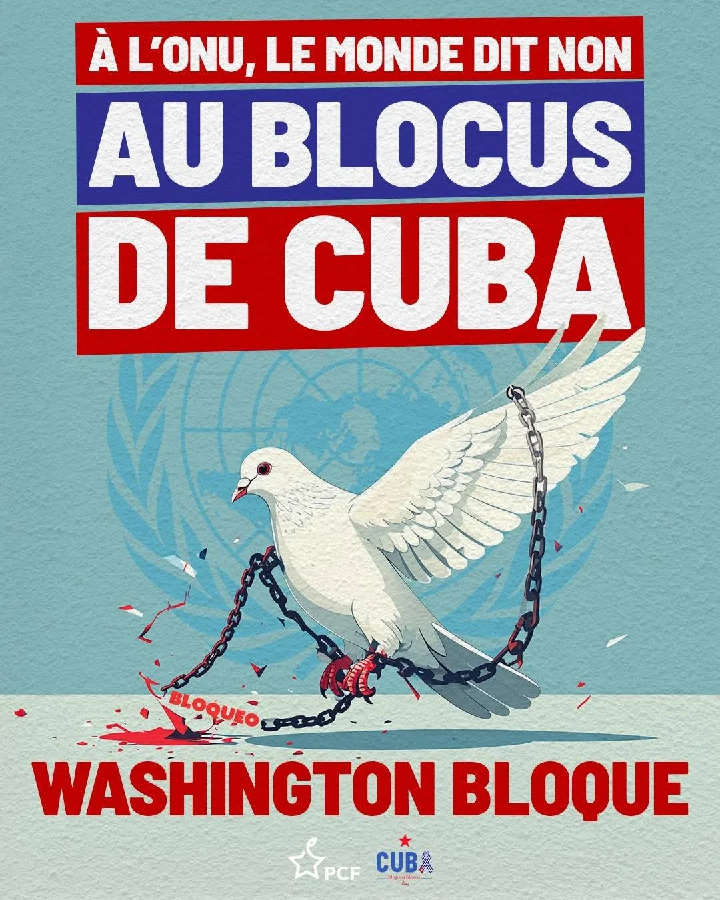
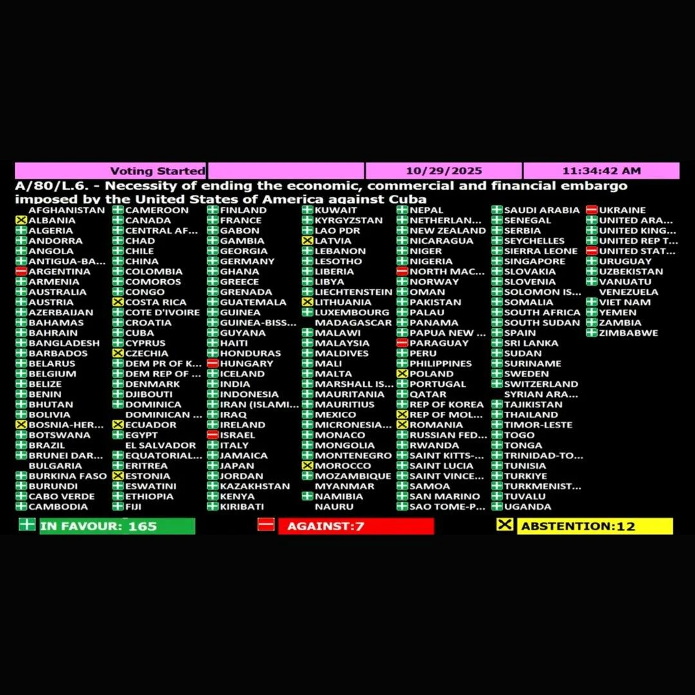

Solidarité internationale
L’ONU demande de nouveau la levée du blocus contre Cuba
Date indiquée par Facebook · 29 octobre 2025
Repères éditoriaux
Le 29 octobre 2025, l’Assemblée générale de l’ONU a demandé la fin de l’embargo économique, commercial et financier imposé à Cuba par les États-Unis. La résolution a recueilli 165 voix pour, 7 contre et 12 abstentions.
Texte conservé avec la publication
Pour la 32ème fois consécutive, l'ONU condamne le blocus contre Cuba.
Malgré le lobbying et les mensonges des USA, 165 pays ont voté en faveur de la résolution condamnant le blocus des Etats-Unis contre Cuba.
7 pays ont voté contre et 12 se sont abstenus.
Les USA, Israël, l'Ukraine, l'Argentine, la Macédoine du Nord, la Hongrie soutiennent le blocus.
L'Albanie, la Bosnie, le Costa Rica, l'Equateur, l'Estonie, la Lettonie, la Lituanie, le Maroc, la Pologne, la Moldavie, la Roumanie et la République Tchèque se sont abstenus.


Sources
Archive rouge · export Facebook · AR-0002-FB-00968
À lire aussi · Le PCF appelle à lever le blocus de Cuba